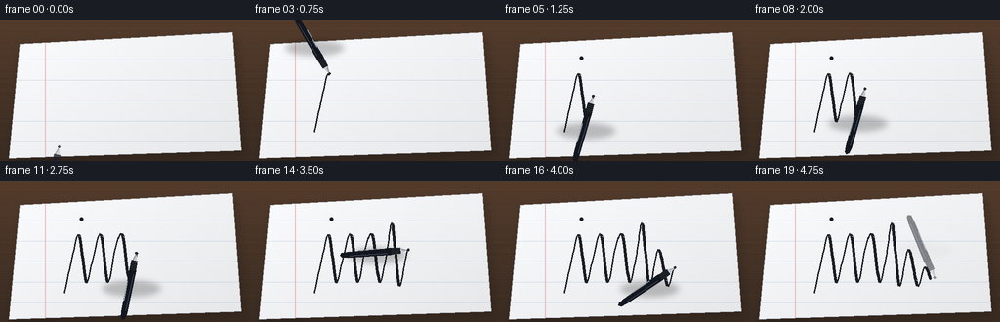
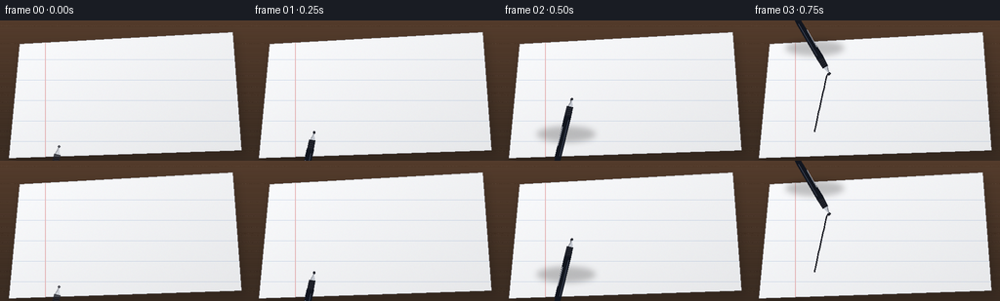

CODING AGENTS AS PIXEL WORLD MODELS
traex/Seed-2.1-Pro-0915 · phygen_035
点击播放 · 原生 RGB 像素
逐轮保存的候选
回放视频、检查图与代码变化。
每份候选均可单独播放。实际图片检查记录在下方工具轨迹中。
候选 01播放与检查图
点击播放 · 原生 RGB 像素


展开代码变化
--- 上一保存版本
+++ 本次保存版本
@@ -0,0 +1,300 @@
+"""Procedural t2v clip: a black pen writing on a white notebook page.
+
+Renders 20 RGB frames (256x144, 4 fps) entirely with numpy + PIL:
+top-down notebook scene, persistent handwritten ink that accumulates over
+time, and a ballpoint pen whose tip follows the ink path.
+"""
+
+from pathlib import Path
+
+import numpy as np
+from PIL import Image, ImageDraw, ImageFilter
+
+import artifact_io
+
+SEED = 21
+rng = np.random.default_rng(SEED)
+
+W, H, N, FPS = 256, 144, 20, 4.0
+SS = 2 # supersampling factor for smooth anti-aliased edges
+SW, SH = W * SS, H * SS
+
+
+def s(p):
+ """Scale a point/polyline from final resolution to supersampled space."""
+ return (np.asarray(p, dtype=float) * SS)
+
+
+# --------------------------------------------------------------------------
+# Static scene: desk, notebook page, ruled lines
+# --------------------------------------------------------------------------
+def build_base():
+ img = Image.new("RGB", (SW, SH), (0, 0, 0))
+ px = img.load()
+ # Warm dark wooden desk with a soft vertical light gradient.
+ for y in range(SH):
+ t = y / SH
+ r = int(58 + 26 * (1 - t))
+ g = int(44 + 16 * (1 - t))
+ b = int(34 + 10 * (1 - t))
+ for x in range(SW):
+ px[x, y] = (r, g, b)
+ desk = np.array(img).astype(np.float32)
+ # Faint wood grain streaks.
+ grain = rng.normal(0, 1.0, (SH, 1)).astype(np.float32)
+ for _ in range(14):
+ yy = rng.integers(0, SH)
+ desk[yy:yy + 1, :, :] += rng.normal(0, 6, (1, SW, 1))
+ desk += grain[:, :, None]
+ img = Image.fromarray(np.clip(desk, 0, 255).astype(np.uint8))
+
+ # Notebook page quad (slight perspective, nearly top-down).
+ page_quad = np.array([
+ [20, 24], [238, 12], [247, 133], [9, 141],
+ ], dtype=float)
+ page_quad_s = s(page_quad)
+
+ # Soft drop shadow under the page.
+ shadow = Image.new("L", (SW, SH), 0)
+ sd = ImageDraw.Draw(shadow)
+ sd.polygon([tuple(p + np.array([3.0 * SS, 4.0 * SS])) for p in page_quad_s],
+ fill=110)
+ shadow = shadow.filter(ImageFilter.GaussianBlur(5 * SS))
+ black = Image.new("RGB", (SW, SH), (12, 10, 9))
+ img = Image.composite(black, img, shadow.point(lambda v: int(v * 0.55)))
+
+ # Page mask and white paper with a gentle corner-to-corner gradient.
+ mask = Image.new("L", (SW, SH), 0)
+ md = ImageDraw.Draw(mask)
+ md.polygon([tuple(p) for p in page_quad_s], fill=255)
+ page = np.zeros((SH, SW, 3), dtype=np.float32)
+ yy, xx = np.mgrid[0:SH, 0:SW]
+ glow = 1.0 - 0.045 * (xx / SW + yy / SH)
+ paper = np.clip(252 * glow, 0, 255)
+ page[:, :, 0] = paper
+ page[:, :, 1] = np.clip(paper + 1, 0, 255)
+ page[:, :, 2] = np.clip(paper + 3, 0, 255)
+ # Subtle paper noise.
+ page += rng.normal(0, 1.1, page.shape)
+ page_img = Image.fromarray(np.clip(page, 0, 255).astype(np.uint8))
+ img = Image.composite(page_img, img, mask)
+
+ # Ruled notebook lines + margin, clipped to the page mask.
+ lines = Image.new("RGBA", (SW, SH), (0, 0, 0, 0))
+ ld = ImageDraw.Draw(lines)
+ line_color = (120, 150, 195, 90)
+ for gy in range(40, 140, 21):
+ ld.line([(0, gy * SS), (SW, gy * SS)], fill=line_color, width=max(1, SS // 2))
+ margin_x = 46 * SS
+ ld.line([(margin_x, 0), (margin_x, SH)], fill=(214, 110, 110, 110), width=SS)
+ lines_np = np.array(lines)
+ m = np.array(mask)
+ lines_np[:, :, 3] = (lines_np[:, :, 3].astype(np.uint16) * m // 255).astype(np.uint8)
+ img = Image.alpha_composite(img.convert("RGBA"), Image.fromarray(lines_np)).convert("RGB")
+
+ # Crisp page edge.
+ ed = ImageDraw.Draw(img)
+ ed.line([tuple(p) for p in list(page_quad_s) + [page_quad_s[0]]],
+ fill=(178, 180, 186), width=max(1, SS // 2))
+ return img
+
+
+# --------------------------------------------------------------------------
+# Cursive writing path ("ink", loosely joined handwriting)
+# --------------------------------------------------------------------------
+# Local space: x to the right, y downward; baseline near y=0, upstrokes negative.
+WAYPOINTS = np.array([
+ # lead-in swoosh
+ [0, 12], [4, -6], [8, -20],
+ # letter i: downstroke
+ [12, 6],
+ # connect up into letter n
+ [16, -8], [20, -20], [24, 6],
+ # n second hump
+ [28, -12], [32, -20], [36, 6],
+ # connect up into tall letter k
+ [40, -10], [43, -26], [47, 8],
+ # k diagonals
+ [52, -12], [57, 8],
+ # exit tail
+ [61, -2], [64, 4],
+], dtype=float)
+I_DOT = np.array([9.5, -29.0]) # local position of the i-dot
+I_DOT_AT = 0.20 # path fraction when the dot is stamped
+ORIGIN = np.array([66.0, 92.0]) # path origin on the final-resolution canvas
+SCALE = 1.85
+
+
+def catmull_rom(points, samples_per_seg=14):
+ """Densely sample a smooth Catmull-Rom spline through the waypoints."""
+ p = np.vstack([points[0], points, points[-1]])
+ out = []
+ for i in range(1, len(p) - 2):
+ p0, p1, p2, p3 = p[i - 1], p[i], p[i + 1], p[i + 2]
+ ts = np.linspace(0, 1, samples_per_seg, endpoint=False)[:, None]
+ t2, t3 = ts ** 2, ts ** 3
+ seg = 0.5 * ((2 * p1) + (-p0 + p2) * ts
+ + (2 * p0 - 5 * p1 + 4 * p2 - p3) * t2
+ + (-p0 + 3 * p1 - 3 * p2 + p3) * t3)
+ out.append(seg)
+ out.append(points[-1][None])
+ return np.vstack(out)
+
+
+spline_local = catmull_rom(WAYPOINTS)
+PATH = ORIGIN + spline_local * SCALE
+PATH_S = s(PATH)
+TANGENT = np.gradient(PATH, axis=0)
+TANGENT /= (np.linalg.norm(TANGENT, axis=1, keepdims=True) + 1e-9)
+# Downstrokes (moving downward on screen) get slightly thicker ink.
+STROKE_W = 1.7 + np.clip(TANGENT[:, 1], 0, 1) * 1.5
+
+
+def draw_ink_to(layer, k, dot_done):
+ """Draw the persistent ink trail up to sample index k onto an RGBA layer."""
+ d = ImageDraw.Draw(layer)
+ if k <= 0:
+ return
+ pts = [tuple(p) for p in PATH_S[:k + 1]]
+ # Varying width: draw overlapping short segments so width can change.
+ for i in range(1, len(pts)):
+ w = max(1.0, float(STROKE_W[i]) * SS)
+ d.line([pts[i - 1], pts[i]], fill=(26, 27, 34, 255),
+ width=int(round(w)))
+ d.ellipse([PATH_S[k, 0] - 1.2 * SS, PATH_S[k, 1] - 1.2 * SS,
+ PATH_S[k, 0] + 1.2 * SS, PATH_S[k, 1] + 1.2 * SS],
+ fill=(26, 27, 34, 255))
+ if dot_done:
+ c = s(ORIGIN + I_DOT * SCALE)
+ r = 1.8 * SS
+ d.ellipse([c[0] - r, c[1] - r, c[0] + r, c[1] + r],
+ fill=(26, 27, 34, 255))
+
+
+# --------------------------------------------------------------------------
+# Pen rendering
+# --------------------------------------------------------------------------
+def draw_pen(canvas, tip_xy, angle, lift=0.0):
+ """Draw a black ballpoint pen. angle is the writing direction (radians).
+ The barrel extends backward from the tip. lift raises/fades the pen.
+ """
+ tip = np.asarray(tip_xy, dtype=float) * SS
+ a = angle + np.pi # barrel direction (backward from tip)
+ ux, uy = np.cos(a), np.sin(a)
+ px, py = -uy, ux # perpendicular
+
+ def local(dist, off):
+ return tip + ux * dist * SS + px * off * SS + uy * 0 # noqa
+
+ def poly(points):
+ out = []
+ for dist, off in points:
+ out.append(tip + np.array([ux, uy]) * dist * SS
+ + np.array([px, py]) * off * SS)
+ return [tuple(q) for q in out]
+
+ overlay = Image.new("RGBA", (SW, SH), (0, 0, 0, 0))
+ d = ImageDraw.Draw(overlay)
+ alpha = int(255 * (1.0 - 0.55 * lift))
+
+ # Contact shadow on the paper.
+ sh = Image.new("L", (SW, SH), 0)
+ shd = ImageDraw.Draw(sh)
+ center = tip + np.array([ux, uy]) * 34 * SS + np.array([2 * SS, 3 * SS])
+ shd.ellipse([center[0] - 30 * SS, center[1] - 8 * SS,
+ center[0] + 30 * SS, center[1] + 8 * SS], fill=int(120 * (1 - lift)))
+ sh = sh.filter(ImageFilter.GaussianBlur(3 * SS))
+ shadow_rgb = Image.new("RGBA", (SW, SH), (10, 8, 7, 0))
+ shadow_rgb.putalpha(sh.point(lambda v: int(v * 0.5)))
+ canvas.alpha_composite(shadow_rgb)
+
+ # Metal cone (tip housing).
+ d.polygon(poly([(0, 0), (9, 2.6), (9, -2.6)]),
+ fill=(196, 200, 208, alpha))
+ d.polygon(poly([(0, 0), (9, 2.6), (5, 0.6)]),
+ fill=(140, 144, 152, alpha))
+ # Ballpoint nib.
+ d.ellipse([tip[0] - 1.1 * SS, tip[1] - 1.1 * SS,
+ tip[0] + 1.1 * SS, tip[1] + 1.1 * SS],
+ fill=(40, 42, 50, alpha))
+ # Black grip section.
+ d.polygon(poly([(8, 3.0), (20, 3.4), (20, -3.4), (8, -3.0)]),
+ fill=(24, 26, 33, alpha))
+ for gx in range(10, 20, 2):
+ d.line([tuple(tip + np.array([ux, uy]) * gx * SS
+ + np.array([px, py]) * 3.1 * SS),
+ tuple(tip + np.array([ux, uy]) * gx * SS
+ - np.array([px, py]) * 3.1 * SS)],
+ fill=(48, 51, 62, alpha), width=max(1, SS // 2))
+ # Main barrel (slightly tapered, rounded tail).
+ body = poly([(18, 3.4), (62, 3.0), (68, 2.2), (70, 0),
+ (68, -2.2), (62, -3.0), (18, -3.4)])
+ d.polygon(body, fill=(18, 22, 31, alpha))
+ # Barrel highlight.
+ d.line([tuple(tip + np.array([ux, uy]) * 22 * SS
+ - np.array([px, py]) * 1.6 * SS),
+ tuple(tip + np.array([ux, uy]) * 60 * SS
+ - np.array([px, py]) * 1.3 * SS)],
+ fill=(86, 96, 118, alpha), width=max(1, SS // 2))
+ # Pocket clip.
+ d.line([tuple(tip + np.array([ux, uy]) * 30 * SS
+ + np.array([px, py]) * 3.2 * SS),
+ tuple(tip + np.array([ux, uy]) * 50 * SS
+ + np.array([px, py]) * 3.2 * SS)],
+ fill=(150, 154, 164, alpha), width=SS)
+ canvas.alpha_composite(overlay)
+
+
+# --------------------------------------------------------------------------
+# Frame generation
+# --------------------------------------------------------------------------
+def main():
+ case_dir = Path(__file__).resolve().parent
+ base = build_base().convert("RGBA")
+ n_path = len(PATH)
+ frames = []
+
+ # Writing happens across frames 1..17; frame 0 approach, 18-19 lift off.
+ for f in range(N):
+ frame = base.copy()
+
+ if f == 0:
+ progress, lift = 0.0, 0.35
+ elif f <= 17:
+ progress = (f - 1) / 16.0
+ lift = 0.0
+ else:
+ progress, lift = 1.0, 0.45 * (f - 17)
+
+ k = int(round(progress * (n_path - 1)))
+ dot_done = progress >= I_DOT_AT
+
+ # Persistent ink layer.
+ ink = Image.new("RGBA", (SW, SH), (0, 0, 0, 0))
+ draw_ink_to(ink, k, dot_done)
+ frame.alpha_composite(ink)
+
+ # Pen position: hover before the start while approaching, then follow.
+ if f == 0:
+ tip = PATH[0] - TANGENT[0] * 26 + np.array([0, -10])
+ ang = float(np.arctan2(TANGENT[0, 1], TANGENT[0, 0]))
+ else:
+ tip = PATH[k].copy()
+ ang = float(np.arctan2(TANGENT[k, 1], TANGENT[k, 0]))
+ # Tiny hand vibration for liveliness.
+ tip += rng.normal(0, 0.35, 2)
+ if f >= 18:
+ tip = PATH[-1] + TANGENT[-1] * (6 * (f - 17)) + np.array([0, -6 * (f - 17)])
+ ang = float(np.arctan2(TANGENT[-1, 1], TANGENT[-1, 0]))
+
+ draw_pen(frame, tip, ang, lift)
+ rgb = frame.convert("RGB").resize((W, H), Image.LANCZOS)
+ frames.append(np.array(rgb, dtype=np.uint8))
+
+ frames = np.stack(frames, axis=0)
+ artifact_io.save(frames, case_dir)
+ print(f"Saved {frames.shape} clip to {case_dir}")
+
+
+if __name__ == "__main__":
+ main()
可观测工具轨迹
实际执行的命令与返回图片。
命令 1exit 0
/bin/bash -lc 'cat prompt.txt; echo "=====RULES====="; cat GENERATION_RULES.md; echo "=====SPEC====="; cat task_spec.json; echo "=====LS====="; ls -la'
命令 2exit 0
/bin/bash -lc 'cat artifact_io.py'
命令 3exit 0
/bin/bash -lc 'python3 -c "import numpy, PIL; print(numpy.__version__, PIL.__version__)"; pwd'
命令 4exit 0
/bin/bash -lc 'cd . && time python3 generate.py'
保存候选 1 份；完成命令 4 次；可验证图片返回 0 张。原始 API 响应与完整日志保留在本地。